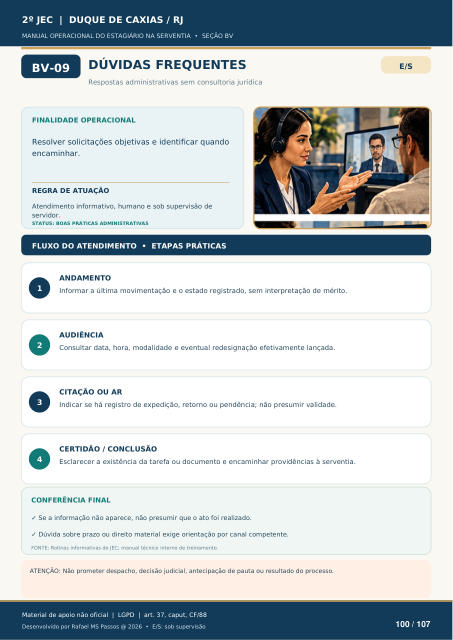

DÚVIDAS FREQUENTES
Respostas administrativas sem consultoria jurídica
FINALIDADE OPERACIONAL
Resolver solicitações objetivas e identificar quando encaminhar.
REGRA DE ATUAÇÃO
Atendimento informativo, humano e sob supervisão de servidor.
STATUS: BOAS PRÁTICAS ADMINISTRATIVAS
FLUXO DO ATENDIMENTO • ETAPAS PRÁTICAS
ANDAMENTO
Informar a última movimentação e o estado registrado, sem interpretação de mérito.
AUDIÊNCIA
Consultar data, hora, modalidade e eventual redesignação efetivamente lançada.
CITAÇÃO OU AR
Indicar se há registro de expedição, retorno ou pendência; não presumir validade.
CERTIDÃO / CONCLUSÃO
Esclarecer a existência da tarefa ou documento e encaminhar providências à serventia.
CONFERÊNCIA FINAL
Se a informação não aparece, não presumir que o ato foi realizado.
Dúvida sobre prazo ou direito material exige orientação por canal competente.
FONTE: Rotinas informativas do JEC; manual técnico interno de treinamento.
ATENÇÃO: Não prometer despacho, decisão judicial, antecipação de pauta ou resultado do processo.
Ver também o infográfico original (página 100)
